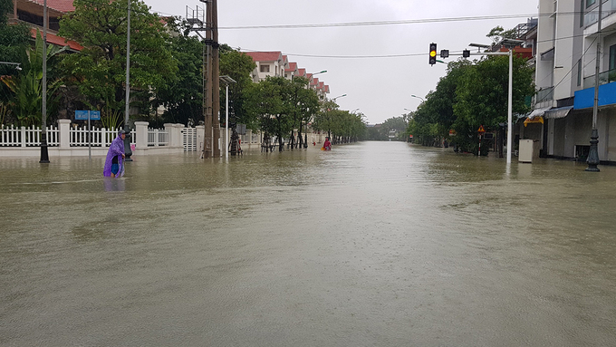

doi song
chinh tri
the thao
giai tri
some thing very random
Chiều 19/10, nước lũ tiếp tục dâng cao ở TP Hà Tĩnh, nhiều tuyến đường đã biến thành sông, hàng chục nghìn người dân được sơ tán.
Lúc 16h, hầu hết tuyến đường lớn ở trung tâm TP Hà Tĩnh như Phan Đình Phùng, Trần Phú, Hàm Nghi, Lê Duẩn... đã bị ngập 0,3-0,7 m, giao thông tê liệt. Chỉ có xe tải và phương tiện chuyên dụng mới có thể ra vào khu dân cư.

Chính quyền TP Hà Tĩnh đã huy động công an, quân đội dùng cano, thuyền máy đến các điểm ngập lụt sâu để sơ tán dân và di chuyển tài sản đến nơi an toàn.
"Cả chục năm nay, thành phố mới chứng kiến trận lụt khủng khiếp như thế này, nhiều nhà cửa vùng trũng thấp đã bị nhấn chìm", anh Lê Thanh Hải, phường Nam Hà, nói. Hiện toàn thành phố Hà Tĩnh và các huyện lân cận bị cắt điện. Theo Ban chỉ huy phòng chống thiên tai và tìm kiếm cứu nạn tỉnh Hà Tĩnh, trong 6h (từ 22h ngày 18/10 tới 4h ngày 19/10), Hà Tĩnh mưa rất to. Riêng TP Hà Tĩnh mưa 110-170 mm.
Mưa lớn cùng với các hồ Kẻ Gỗ, Bộc Nguyên, Khe Xai, Tàu Voi, Thượng Sông Trí... đồng loạt xả tràn điều tiết lũ khiến nước lũ lên nhanh.
Hiện nhiều xã ở Cẩm Xuyên, TP Hà Tĩnh, Hương Khê, Thạch Hà... đã bị cô lập. Các hộ dân phải di chuyển đồ lên cao tránh bị ngập nước.
Thống kê của Ban chỉ đạo trung ương về phòng chống thiên tai, đợt mưa lũ, sạt lở đất từ ngày 6 đến sáng 19/10 đã làm 90 người chết, 34 người mất tích.
Nhà chức trách cho hay, đến chiều 19/10, Hà Tĩnh đã phải sơ tán hơn 7.000 hộ dân với hơn 20.700 người.